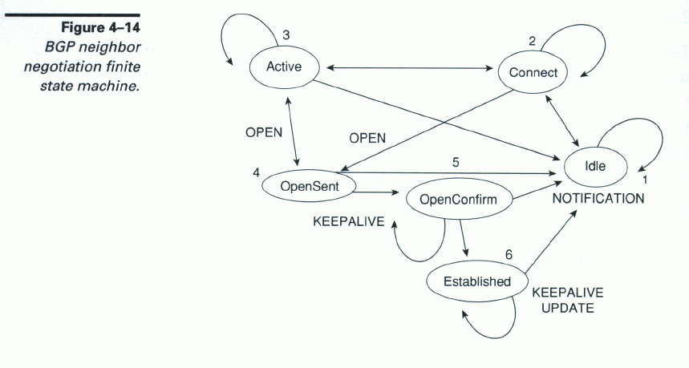

The Border Gateway Protocol (BGP) is an inter-autonomous system routing protocol. It is built on experience gained with EGP...
This was a nice way of saying that EGP (Exterior Gateway Protocol) had run out of gas. EGP had worked well, but no one could have predicted (or planned for) the explosive growth of the Internet. The original BGP specification was quickly followed by others. We are now at BGP-4. These revisions are not due to any deficiency in the design of BGP, but rather are a reflection of how BGP can grow and evolve to accomodate the rapidly changing needs of the Internet.
| Feature | Discussion |
| CIDR aggregation | This is the lumping of addresses with common prefixes together. See RFC1518, September 1993. |
| Community Addressing. | A community is a group of destinations which share some common property. See RFC1997,August 1996. |
| Confederation Addressing. | A confederation is a group of Autonomous Systems which, for routing purposes, appear to be a single AS to those BGP speakers outside of the confederation. See RFC1965, June 1996. |
| Full Mesh Routing. | All UPDATE messages are passed from all BGP speakers to all of their next hop neighbors. This method of route information exchange is used when there are security or policy reasons to prevent Route Reflection. |
| Route Reflection. | Route Reflection involves designating one BGP speaker to pass along UPDATE information to a list of BGP speakers, even though the speakers on the list can all talk to one another. This is an alternative to Full Mesh Routing that is used to cut down on UPDATE traffic. See RFC1966, June 1996. |
| Mobile Computing | Because BGP can dynamically UPDATE routes, there are several methods for changing the path to a particular host as that host changes its geographic position. One method is to statically list the host in all possible AS locations. BGP will check for the existence of the host during route authentication. If the host is found, the address is advertised. If the host is not found, the address is discarded from the advertisement list. |
| Loopback Interfaces | The Loopback Interface is a virtual connection that can be used to overcome situations in which a particular host drops out of the route. The substitue route is brought up immediately so that users have no break in service. |
| Flapping Penalties | A BGP speaker that flaps (comes up and fails repeatedly) is a horrendous burden to its neighbors because routing tables must be updated each time. After a certain number of "flaps", a speaker is penalized by being denied admission to the peer group for a certain length of time. Penalties increase with continued flapping. This feature is supported by policy rather than by an attribute. | Current Attribute List | BGP currently supports the following attributes. |
| Future Features. | Because of the design of BGP message packets, new ATTRIBUTES can be defined and added in the future. See RFC2042, June 1996, Registring New Attribute types. |
Any host that uses BGP routing protocol is called a "BGP speaker". On page 4 of RFC1771, it is stated that "The hosts executing the Border Gateway Protocol need not be routers." I have found no other mention in the RFCs of "non-router" BGP speakers.
There are 2 kinds of BGP speakers.
When a BGP Speaker is in full operation, the other BGP Speakers with which it communicates are called its BGP peers. (Some peers are more equal than other peers. See the discussion of Route Reflection further down in this document.)
A BGP Speaker always starts in the IDLE state. There are several steps before the BGP Speaker is ready to accept packets, including:
This figure from page 108, "Internet Routing Architectures", by Bassam Halabi, CISCO Press, 1997. 
| Timer | Definition |
| Initial Timer | Set when IDLE state changes to CONNECT state. This timer determines interval between attempting initializations. |
| ConnectRetry | Set when TCP message sent to peer. If TCP connect fails, ConnectRetry timer reset and the host enters ACTIVE state and begins listening for connect request from peer. |
| Hold Timer | The Hold Timer initially set at a large value (like 4 minutes) when BGP Speaker enters OPENSENT state. One Hold Timer is set for each peer-to-peer connection and this value must be negotiated. This negotiation occurs by means of OPEN and KeepAlive Messages that take the BGP speaker from OPENSENT state to OPENCONFIRM state to ESTABLISHED state. If the Hold Timer is set to ZERO, it means that no KeepAlive messages will be exchanged peer-to-peer. Otherwise, the value of the Hold Timer determines how often KeepAlive messages will be sent between peers. A BGP speaker may have different Hold Timer values for different peers. |
| KeepAlive | The reset value for the KeepAlive timer is set with the Hold Timer. A value of ZERO means that KeepAlive messages will not be sent. If the Hold Timer has a value greater than zero, the KeepAlive timer will be reset each time an UPDATE message is sent or recieved or each time the KeepAlive timer expires. The purpose of the KeepAlive timer is to refresh the connections between peers, absent any other traffic. |
| MinRoute Advertisement Interval | This timer blocks an UPDATE message from being sent out too often. This limit does not apply to IBGP (Internal BGP) messages, since fast convergence of RIB's (Routing Information Bases) for all BGP Speakers in same AS is a good thing. |
| MinAS Origination Interval | This timer blocks an UPDATE message from being sent out too often. This limit applies to IBGP (Internal BGP) messages. |
| State | Timer | Suggested Value | Action if timer expires |
| IDLE | initial timer | 60 seconds | The time should be doubled for each consecutive retry. |
| CONNECT | ConnectRetry | 90 seconds | Release BGP resources. Return to IDLE state. |
| ACTIVE | ConnectRetry | 90 seconds | Release BGP resources. Return to IDLE state. |
| OPENSENT | Hold Timer | 90 seconds | Send NOTIFICATION message with error code Hold Timer Exprired. Return to IDLE state. |
| OPENSENT | KeepAlive | 30 seconds | Send KeepAlive Message and reset KeepAlive Timer. |
| OPENCONFIRM | Hold Timer | 90 seconds | Send NOTIFICATION message with error code Hold Timer Exprired. Return to IDLE state. |
| OPENCONFIRM | KeepAlive | 30 seconds | Send KeepAlive Message and reset KeepAlive Timer. |
| ESTABLISHED | Hold Timer | 90 seconds | Send NOTIFICATION message with error code Hold Timer Exprired. Return to IDLE state. |
| ESTABLISHED | KeepAlive | 30 seconds | Send KeepAlive Message and reset KeepAlive Timer. |
| ESTABLISHED | MinASOriginationInterval | 15 seconds | Allowed to send next UPDATE Message to peer outside LOCAL AS |
| ESTABLISHED | MinRouteAdvertisementInterval | 30 seconds | Allowed to send UPDATE to peer inside LOCAL AS |
Routes are advertised between a pair of BGP Speakers in UPDATE messages. The UPDATE messages contain
Routes are stored in Routing Information Bases (RIBs). Each BGP Speaker maintains 3 RIBs.
| RIB | Purpose |
| Adj-RIBs-In | The Adj-RIBs-In store routing information that has been learned from inbound UPDATE messages. Their contents represent routes available as an input to the Decision Process. |
| Loc-RIB | The Loc-RIB contians the local routing information that the BGP speaker has selected by applying its local policies to the routing information contained in its Adj-RIBs-In. |
| Adj-RIBs-Out | The Adj-RIBs-Out store the information that the local BGP speaker has selected for advertisement to its peers. The routing information stored in the Adj-RIBS-Out will be carried in the local BGP speaker's UPDATE messages and advertised to its peers. |
All BGP Messages have the same header.
| TYPE | Message Name | Message Purpose | Message Format | |
| varies | Message Header | All BGP messages from one BGP speaker to a particular peer have the same MARKER information in the message header. This provides a consistent format for sending, receiving, authenticating, and synchronizing BGP messages. Note the TYPE field in the message header. This is an unsigned integer designating the type of message to follow. | Message Header Format | |
| 1 | OPEN | Once a TCP connection is established, the first message sent by each side is an OPEN message. If the OPEN message is acceptable, a KEEPALIVE | OPEN Message Format |
|
| 2 | UPDATE | To send Adj-RIB-Out information to peers. | UPDATE Message Format |
|
| 3 | NOTIFICATION | Error condition or a BGP Speaker CEASES intentionally. | NOTIFICATION Message Format |
|
| 4 | KEEPALIVE | A KEEPALIVE message is sent as a reply to an OPEN message when a peer-to-peer connection has first been established. Later, KEEPALIVE is used to periodically refresh the connection with a peer. | KEEPALIVE Message Format |